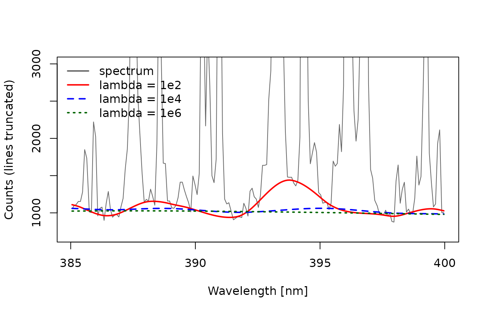
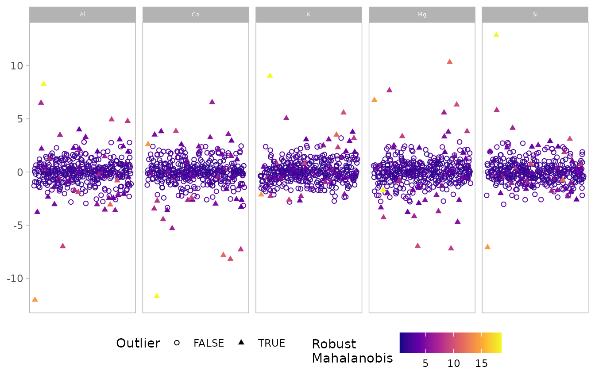
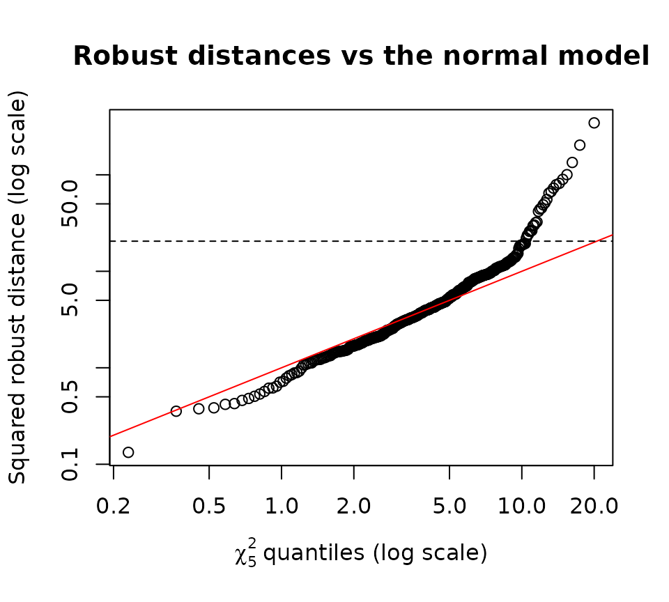
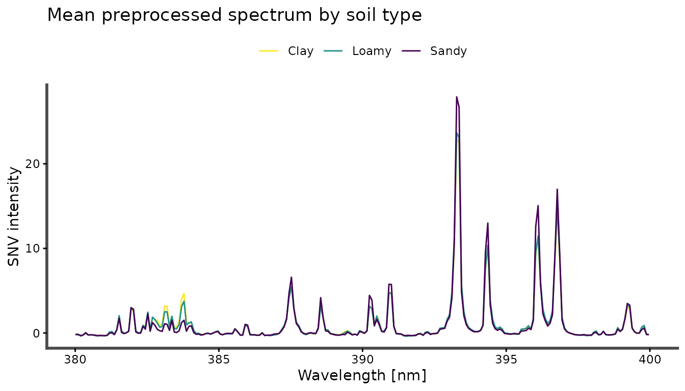

This vignette takes the raw spectra of the specLIBS data
set through a preprocessing pipeline: baseline correction,
normalization, screening for outlying shots, and averaging of
replicates. Every step is a modeling choice. For each one, the vignette
shows how to check the choice against the data rather than assuming
it.
library(specProc)
data(specLIBS)
meta <- specLIBS[1:8]
X <- as.matrix(specLIBS[-(1:8)])
wl <- as.numeric(colnames(X))The data and its structure
specLIBS contains 400 spectra of 50 soil samples. Each
sample was measured at 8 locations, and each spectrum has 7152 channels
between 199 and 822 nm, stored as raw detector counts.
table(locations_per_sample = table(meta$Sample))
#> locations_per_sample
#> 8
#> 50
summary(as.vector(X))
#> Min. 1st Qu. Median Mean 3rd Qu. Max.
#> 634.0 764.0 826.0 951.7 928.0 28446.0Two features of the data shape everything that follows:
- Replicates are nested within samples. The 8 spectra of a sample share its composition and differ only by shot-to-shot variability and small-scale heterogeneity. Statistics that treat them as independent overstate precision.
- The counts include a large detector offset. The smallest count is about 630, not zero. Any ratio, relative standard deviation or normalization computed on uncorrected counts is diluted by this offset.
We track five emission lines throughout, measured as the summed intensity within ±0.15 nm of the line center:
Step 1: Baseline correction
baseline_arpls() estimates the continuum with
asymmetrically reweighted penalized least squares. Its smoothing
parameter lambda sets how stiff the baseline is: small
values follow narrow features and can eat into emission lines, while
large values miss curvature of the continuum.
zoom <- wl > 385 & wl < 400
spec <- X[1, ]
fits <- sapply(c(1e2, 1e4, 1e6), function(l) {
unlist(baseline_arpls(matrix(spec, 1), lambda = l, max.iter = 20)$background)
})
matplot(wl[zoom], cbind(spec[zoom], fits[zoom, ]), type = "l", lty = c(1, 1, 2, 3),
col = c("grey40", "red", "blue", "darkgreen"), lwd = c(1, 2, 2, 2),
ylim = c(700, 3000), xlab = "Wavelength [nm]", ylab = "Counts (lines truncated)")
legend("topleft", c("spectrum", "lambda = 1e2", "lambda = 1e4", "lambda = 1e6"),
col = c("grey40", "red", "blue", "darkgreen"), lty = c(1, 1, 2, 3), lwd = 2, bty = "n")
With lambda = 1e2, the baseline rises into the base of
the Ca and Al lines and removes part of their area. Since the baseline
is an estimate, check how sensitive the quantity you care about is to
lambda:
sens <- sapply(c(1e3, 1e4, 1e5, 1e6, 1e7), function(l) {
bg <- as.matrix(baseline_arpls(X[1:8, ], lambda = l, max.iter = 20)$background)
colMeans(line_areas(X[1:8, ] - bg))
})
colnames(sens) <- paste0("lambda=", c("1e3", "1e4", "1e5", "1e6", "1e7"))
round(sens)
#> lambda=1e3 lambda=1e4 lambda=1e5 lambda=1e6 lambda=1e7
#> Mg II 279.55 48336 48423 48648 49153 49500
#> Si I 288.16 20437 20509 20484 20438 20503
#> Ca II 393.37 45902 46114 46151 46155 46204
#> Al I 396.15 28128 28182 28282 28281 28311
#> K I 766.49 3313 3325 3328 3405 3445Across four orders of magnitude of lambda, the areas of
the strong lines change by less than 2%. The weak K line, which sits on
a relatively larger continuum, changes by about 4%. The line areas are
therefore robust to this choice for strong lines, but not entirely for
weak ones. We use lambda = 1e5, the smallest value at which
the baseline stays clear of the line wings in the plot above. For your
own data, run the same check on a few representative spectra.
Xb <- as.matrix(baseline_arpls(X, lambda = 1e5, max.iter = 20)$correction)The alternatives are baseline_als() (asymmetric least
squares, with an explicit asymmetry parameter p) and
baseline_lsp() (iterative polynomial fitting). All three
return the corrected spectra together with the estimated background.
Step 2: Normalization
Normalization aims to remove multiplicative, shot-to-shot fluctuations in the amount of ablated material and plasma conditions. It’s often judged by the relative standard deviation (RSD) of lines across replicates alone. That criterion is incomplete, because a transformation that shrinks every spectrum toward a common shape also reduces RSD, while destroying the between-sample differences we want to measure.
A better criterion compares both sources of variation. The intraclass correlation (ICC) is the fraction of total variance that lies between samples rather than between replicates of a sample. The higher it is, the better a line discriminates between samples relative to its measurement noise. We estimate it from a one-way random-effects ANOVA:
icc <- function(v, group) {
if (stats::var(v) == 0) return(NA_real_)
fit <- stats::anova(stats::lm(v ~ factor(group)))
k <- mean(table(group))
msb <- fit[1, "Mean Sq"]
msw <- fit[2, "Mean Sq"]
(msb - msw) / (msb + (k - 1) * msw)
}
rsd <- function(v, group) {
median(tapply(v, group, function(z) sd(z) / mean(z) * 100))
}We compare no normalization, total-area normalization, SNV, MSC, and internal standardization to the Si I 288.16 nm line:
si_cols <- colnames(X)[abs(wl - 288.16) < 0.15]
candidates <- list(
`baseline only` = Xb,
`area` = as.matrix(normalize(as.data.frame(Xb), method = "area")),
`SNV` = as.matrix(snv(Xb)$correction),
`MSC` = as.matrix(msc(Xb)$correction),
`internal std. (Si)` = as.matrix(normalize(as.data.frame(Xb), method = "internal",
wlength = si_cols))
)
evaluate <- function(M) {
A <- line_areas(M)
data.frame(
line = colnames(A),
RSD = apply(A, 2, rsd, group = meta$Sample),
ICC = apply(A, 2, icc, group = meta$Sample)
)
}
scores <- do.call(rbind, lapply(names(candidates), function(nm) {
cbind(normalization = nm, evaluate(candidates[[nm]]))
}))
#> Warning in anova.lm(stats::lm(v ~ factor(group))): ANOVA F-tests on an
#> essentially perfect fit are unreliable
wide <- function(stat) {
out <- tapply(scores[[stat]], list(scores$normalization, scores$line), identity)
round(out[names(candidates), names(lines)], 2)
}
wide("RSD") # median within-sample RSD (%)
#> Mg II 279.55 Si I 288.16 Ca II 393.37 Al I 396.15 K I 766.49
#> baseline only 5.66 8.19 6.73 7.07 12.33
#> area 4.60 6.67 5.44 5.28 12.63
#> SNV 3.26 5.66 3.79 4.36 15.56
#> MSC 3.29 5.55 3.80 4.17 12.61
#> internal std. (Si) 6.31 0.00 7.42 6.37 13.14
wide("ICC") # fraction of variance between samples
#> Mg II 279.55 Si I 288.16 Ca II 393.37 Al I 396.15 K I 766.49
#> baseline only 0.90 0.77 0.81 0.79 0.86
#> area 0.56 0.63 0.70 0.68 0.47
#> SNV 0.80 0.49 0.60 0.61 0.54
#> MSC 0.79 0.54 0.66 0.64 0.51
#> internal std. (Si) 0.76 0.00 0.41 0.33 0.66The two criteria disagree, and the disagreement is informative:
- SNV and MSC give the best repeatability. They reduce the replicate RSD of the Mg, Ca and Al lines by about 40% compared with baseline correction alone.
- They also lower the ICC. A lower ICC means the between-sample variance shrank even more than the within-sample variance. Normalization removes multiplicative variation, and part of the multiplicative variation between samples is systematic: soils of different texture ablate and emit differently.
- Replicates alone cannot say whether that variation is useful. If the between-sample intensity differences are a matrix effect unrelated to the property of interest, removing them helps. If they carry information about it, removing them hurts. Only a validated model of that property can decide; the calibration vignette does this for clay content.
- The weak K line is a special case. SNV increases its RSD: dividing by the whole-spectrum standard deviation adds that statistic’s noise to a line that is itself noisy.
- Internal standardization by Si is not usable here. It sets the Si line to a constant, so its own RSD and ICC are meaningless. It also assumes the silicon content is constant across samples, which is false for soils ranging from clay to sand. It lowers the ICC of every other line.
No normalization is universally best, so choose one on data from the matrix at hand, and confirm the choice against the end goal. We continue with SNV, the most repeatable option, and revisit the choice in the calibration vignette:
Xn <- candidates$SNVStep 3: Screening outlying shots
A misfired or defocused shot can bias a sample’s mean spectrum. Outliers must be judged relative to the other shots of the same sample, because the differences between samples are real signal. We therefore remove each sample’s median from its line intensities, and look for shots that are outlying in this within-sample deviation space.
A <- line_areas(Xn)
deviation <- A - apply(A, 2, function(v) ave(v, meta$Sample, FUN = median))
colnames(deviation) <- sub(" .*", "", colnames(deviation))plot_outliers() computes robust (MCD) Mahalanobis
distances, which account for the correlation between lines. It then
displays the standardized deviation of every shot for each variable:
plot_outliers(deviation, quan = 0.75, show.mahal = TRUE)
The default cutoff of plot_outliers() flags a large
share of the shots:
screen <- plot_outliers(deviation, quan = 0.75, show.outlier = FALSE, show.mahal = FALSE)
table(flagged = screen$outlier)
#> flagged
#> FALSE TRUE
#> 356 44That is about 11% of the shots, far more than the few gross errors one would expect from misfires. Before discarding anything, compare the distribution of the squared robust distances with the χ² distribution they would follow if the within-sample deviations were multivariate normal:
d2 <- screen$mahalanobis^2
p <- ncol(deviation)
qqplot(stats::qchisq(stats::ppoints(length(d2)), df = p), d2, log = "xy",
xlab = expression(chi[5]^2 ~ "quantiles (log scale)"),
ylab = "Squared robust distance (log scale)",
main = "Robust distances vs the normal model")
abline(0, 1, col = "red")
abline(h = stats::qchisq(0.999, p), lty = 2)
The bulk of the shots follows the reference line: the median distance matches its χ² expectation. The upper tail is much heavier than the normal model predicts. Most of these shots are not errors: they reflect genuine heterogeneity of the soil at the scale of the laser spot. Discarding them would bias each sample’s mean toward its most homogeneous spots.
A defensible rule is to remove only the gross outliers, beyond the 99.9% quantile of the χ² distribution, and to report how many shots were removed:
flagged <- d2 > stats::qchisq(0.999, p)
sum(flagged)
#> [1] 26
table(shots_kept = table(meta$Sample[!flagged]))
#> shots_kept
#> 2 4 5 6 7 8
#> 1 2 2 2 2 41
sort(table(meta$Sample[flagged]), decreasing = TRUE)[1:5]
#>
#> MRI007 MRI001 MRI004 MRI010 MRI016
#> 6 4 4 3 3Most samples keep all 8 shots. The few samples that lose several shots are heterogeneous and deserve inspection: their mean spectrum rests on fewer measurements and is less certain.
Step 4: Averaging replicates
With the screened shots, average() reduces each sample
to one mean spectrum. It is implemented in C++ and handles the full
matrix in a fraction of a second:
Xs <- average(cbind(Sample = meta$Sample[!flagged], as.data.frame(Xn[!flagged, ])), Sample)
dim(Xs)
#> [1] 50 7153The mean of the remaining shots still includes the heavy-tailed but legitimate variability discussed above. If you prefer not to screen at all, the per-sample median of each channel is a robust alternative to the mean, but it is less efficient when the data are close to normal.
The result
The preprocessed, sample-level data set is ready for exploratory analysis or calibration:
samples <- meta[match(Xs$Sample, meta$Sample), ]
by_type <- average(cbind(Type = samples$Type, Xs[-1]), Type)
keep <- names(by_type)[-1][wl > 380 & wl < 400]
plot_spectra(by_type[c("Type", keep)], id = Type) +
ggplot2::theme(legend.position = "top") +
ggplot2::labs(color = NULL, y = "SNV intensity", title = "Mean preprocessed spectrum by soil type")
The companion vignettes use this pipeline to fit emission lines
(vignette("line-fitting", package = "specProc")) and to
build a calibration model for clay content
(vignette("calibration", package = "specProc")).